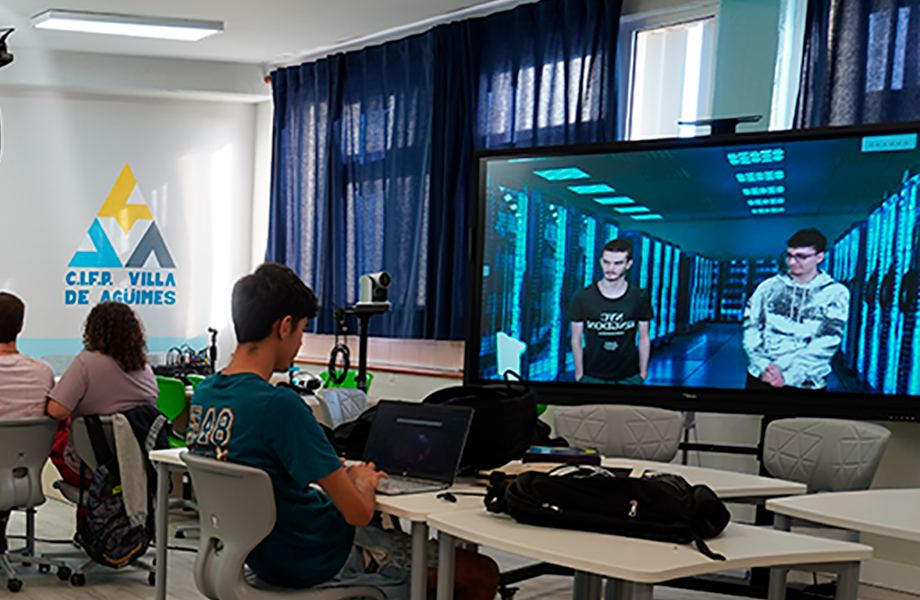

Pantalla interactiva · Aula ATECA
Newline Lyra TT-8621Q
Pizarra digital de 86" en 4K: anotación sobre cualquier contenido, proyección inalámbrica y apps para el aula.
OBJETIVOS
Este manual explica cómo encender, conectar y usar la pantalla interactiva Newline Lyra TT-8621Q del aula ATECA: pizarra digital, anotación sobre cualquier contenido, proyección inalámbrica desde portátiles y móviles, y las herramientas incluidas para el aula.
RECURSOS
- Pantalla Newline TT-8621Q con su mando a distancia y los lápices pasivos.
- Cable USB-C (un solo cable para imagen, táctil y carga del portátil) o cable HDMI + USB táctil.
- Memoria USB formateada en FAT32 para guardar la pizarra.
- Wifi del centro para la proyección inalámbrica.
La pantalla
1. Características
| Característica | TT-8621Q |
|---|---|
| Tamaño y resolución | 86", 4K UHD (3840 × 2160) |
| Tecnología táctil | Infrarrojos (IR), 20 puntos a la vez, con dedo o lápiz pasivo |
| Cristal | Antirreflejos, antihuellas y antimicrobiano |
| Sistema integrado | Android 11, 4 GB de RAM, 32 GB + tarjeta SD de 32 GB |
| Conectividad | Wifi 6 + Bluetooth 5.2, 2 × RJ-45 (entrada y salida) |
| Entradas de vídeo | 3 × HDMI 2.0, 1 × DisplayPort 1.2, 2 × USB-C |
| Salidas | HDMI out, línea de audio, S/PDIF |
| USB-C | Frontal con carga de 65 W (un solo cable para el portátil) |
| Ranura OPS | Para un PC Windows integrado (opcional) |
| Audio | 2 altavoces frontales de 20 W, entrada de micrófono |
| Control | RS-232 y mando a distancia |
| Cámara | Módulo 4K opcional |
Distancia de visión
El fabricante recomienda unos 3,4 m de distancia para esta pantalla de 86".
2. Encender y apagar
- Comprueba que el interruptor trasero (junto al cable de corriente) está en I.
- Pulsa el botón de encendido del panel frontal o del mando. LED blanco = encendida.
- Pulsación corta: modo suspensión (LED rojo y blanco alternos).
- Pulsación larga (más de 2 s): aparece el aviso Turn off. Confirma para apagar (LED rojo).
Apagado correcto
Apaga siempre desde el botón antes de cortar la corriente. Un corte brusco puede dañar el panel. No la enciendas y apagues muchas veces seguidas.
3. Botones y mando
| Control | Acción |
|---|---|
| Encendido | Corta: encender / suspender · Larga: apagar |
| Volumen | Corta: ajustar · Larga 5 s: activar o desactivar el táctil |
| Brillo | Ajustar el brillo |
| Inicio | Ir a la pantalla de inicio |
| Ajustes rápidos | Corta: abrir el menú · Larga 5 s: bloquear el botón de encendido |
| Mando: congelar | Congela la imagen (pulsar otra vez para salir) |
| Mando: fuente | Cambiar de entrada (HDMI, USB-C, DP, OPS) |
| Mando: captura | Captura de pantalla |
Menú de ajustes rápidos
Desliza dos dedos hacia arriba desde el borde inferior: brillo, volumen, congelar, silencio, modo solo sonido, pantalla dividida, bloquear pantalla y herramientas de clase.
Uso en clase
4. Inicio y barras laterales
En la pantalla de inicio verás reloj, fecha, la vista previa de la fuente conectada y los iconos principales: OPS, Navegador, Pizarra, Archivos, Apps y Compartir pantalla.
A ambos lados hay una barra de herramientas con: fuente OPS, Inicio, Anotación, Pizarra, Apps, Fuentes, cambio de aplicación y Volver. Puedes subirla, bajarla o minimizarla.
5. Conectar un portátil
| Conexión | Qué hacer |
|---|---|
| USB-C (recomendado) | Un solo cable: imagen, sonido, táctil y carga del portátil (65 W) en el puerto frontal |
| HDMI + USB táctil | Conecta el HDMI para la imagen y el cable USB táctil (USB-B) para controlar el portátil desde la pantalla |
| DisplayPort | Igual que HDMI, máximo 1,8 m de cable |
- Conecta el cable.
- Pulsa Fuentes en la barra lateral y elige la entrada (los iconos en blanco tienen señal).
- Si el táctil no coincide con el dedo en Windows: Panel de control → Configuración de Tablet PC → Calibrar.
Cables
Usa cables certificados: máximo 3 m en HDMI y 1,8 m en DisplayPort.
6. Pizarra digital
Pulsa Pizarra en el inicio o en la barra lateral.
| Herramienta | Uso |
|---|---|
| Lápiz y rotulador | Escribir. Mantén pulsado 2 s para cambiar grosor y color |
| Subrayador | Resaltar sin tapar el texto |
| Formas | Círculo, elipse, cuadrado, triángulos, estrella, flecha, línea |
| Seleccionar | Mover, escalar, girar, copiar, bloquear o borrar objetos |
| Borrador | Parcial o por objeto. La palma o el puño borran |
| Mover lienzo | Desplazar la pizarra infinita |
| Páginas | Hasta 99 páginas, con miniaturas para navegar |
| Más opciones | Insertar imágenes, texto, notas adhesivas, PDF, buscar imágenes o webs, reglas y cámara de documentos |
Reconocimiento inteligente
La pantalla distingue el lápiz fino, el dedo y la palma: escribe con el lápiz, mueve con el dedo y borra con la palma sin cambiar de herramienta. Se configura en Ajustes de la pizarra → Reconocimiento de objetos.
Guardar y compartir la pizarra:
- Código QR: el alumnado escanea el QR con el móvil y se lleva las páginas de la clase.
- USB: guarda las páginas en una memoria FAT32.
- Correo: envía las páginas con la app AquaMail.
7. Anotar sobre todo
Pulsa Anotación en la barra lateral: aparece una capa transparente para escribir sobre lo que se esté viendo (una web, un PDF, un vídeo o el portátil conectado). Al salir se guarda una captura en Almacenamiento interno → Pictures → Screenshots.
8. Compartir sin cables
| Herramienta | Qué hace |
|---|---|
| Newline Cast (Compartir pantalla) | Proyecta desde portátiles, tablets y móviles. Admite AirPlay y Google Cast; las instrucciones aparecen en la pantalla |
| Newline Broadcast | Hace lo contrario: envía la pantalla a los dispositivos del alumnado a través del navegador |
Red
Los dispositivos deben estar en la misma red que la pantalla.
9. Apps incluidas
| App | Uso en el aula |
|---|---|
| Office Suite | Abrir Word, Excel, PowerPoint y PDF sin ordenador |
| File Viewer | Explorar la memoria interna, USB, red y nube |
| Vote | Votaciones y encuestas rápidas en clase |
| Visualizer | Usar una cámara de documentos |
| Reloj | Temporizador, cronómetro y alarmas para actividades |
| Newline Classroom | Herramientas de clase (desde ajustes rápidos) |
| Newline Engage Cloud | Pizarra colaborativa en la nube |
| Chromium / Navegador | Navegar por la web |
| Newline App Store | Instalar más apps educativas |
10. Ajustes útiles
| Ajuste | Dónde | Para qué |
|---|---|---|
| Pantalla dividida | Ajustes rápidos | Dos apps a la vez (pizarra + web) |
| Congelar imagen | Ajustes rápidos o mando | Preparar algo en el portátil sin que se vea |
| Solo sonido | Ajustes rápidos | Apaga la imagen y mantiene el audio |
| Filtro de luz azul | Ajustes → Filtros de pantalla | Menos fatiga visual |
| Encendido y apagado programado | Ajustes → Energía | Ahorro de energía fuera del horario |
| Fuente al encender | Ajustes → Entrada y salida | Arrancar directamente en el portátil o en Android |
| Cuentas | Ajustes → Sistema | Modo de un usuario o multiusuario, con perfiles de profesorado e invitado |
| Bloqueos | Ajustes → Sistema → Seguridad | Bloquear USB, instalación de apps, ajustes o botones |
Modo administrador
Los bloqueos y las cuentas se gestionan en el modo administrador. Su contraseña está en el manual del fabricante: cámbiala y guárdala fuera de esta web.
Ideas y problemas
11. Ideas para el ATECA
- Clase con pizarra infinita: explicar, guardar las páginas y compartirlas por QR al terminar.
- Corrección en directo: proyectar un trabajo del alumnado con Newline Cast y anotar encima.
- Votaciones con la app Vote para comprobar la comprensión.
- Producción audiovisual: llevar la salida HDMI out al ATEM Mini Pro o a OBS para grabar o emitir la clase.
- Control por RS-232: encender, cambiar de fuente o activar la pizarra desde un PC o un sistema domótico (útil para prácticas de sistemas y automatización).
- Videoconferencia con el módulo de cámara 4K opcional.
12. Problemas frecuentes
El táctil no funciona con el portátil
Comprueba el cable USB táctil (o usa USB-C), cambia de fuente y vuelve, o recalibra en Windows.
No se guarda la pizarra en el USB
Formatea la memoria en FAT32.
No hay sonido por HDMI
Sube el volumen en la pantalla y en el portátil, y comprueba que ninguno esté en silencio. Desconecta y vuelve a conectar el HDMI.
La pantalla se apaga sola
Revisa Ajustes → Energía: el ahorro de energía bloquea la pantalla y la apaga si no se usa en 2 minutos.
El táctil no responde en ninguna fuente
Puede haberse desactivado: mantén pulsado el botón de volumen 5 segundos.